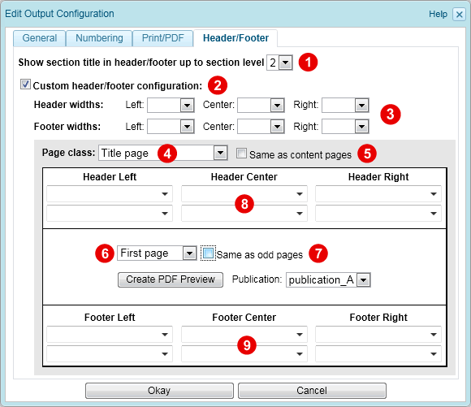

2.6.2.1.5. Header/Footer settings
For PDF output, the "Header/Footer" tab allows customization of the page header and footer:

Figure 2.6.15. Header/Footer configuration for PDF output
If the "Custom header/footer configuration" checkbox  is not checked, then the default content for headers/footers is used. The default content for headers is as follows:
is not checked, then the default content for headers/footers is used. The default content for headers is as follows:
- The center header contains the current section/chapter name (up to the section level defined by
 ).
). - Title page headers are blank.
- Headers of the first page of a sequence are blank.
- For draft publications, the left and right headers show the word "Draft" in the appropriate language (as defined by the gentext definitions).
The default content for footers is as follows:
- For double-sided output, the page-number appears in the outside corner (right footer on right-hand pages, left footer on left-hand pages).
- For single-sided output, the page-number appears in the center footer.
- Title page footers are blank.
If the default header/footer is not appropriate, then check the "Custom header/footer configuration" checkbox and customize the header/footer in the input fields below. The header/footer area has a predefined table layout, which consists of three columns (left, center, right) and two rows. The width of each column and the content of each cell can be defined as described below. Note that different headers/footers can be defined for different page classes (e.g. title pages, content pages, appendix,...). Within each page class different headers/footers can be defined for the first, even, odd and blank pages.
Note:
The style used to format the header / footer area is defined by the block styles page_header and page_footer (see Section 2.4.2, “Pre-defined styles”).
Header widths / Footer widths 
For single sided output the percentage values define the relative width of the left, center and right header/footer column. For double sided output the percentage values define the width of the inside, center and outside header/footer column. To remove a column, set the width to 0%.
Page class
Select the page class for which the header/footer shall be customized  . Following page classes exist:
. Following page classes exist:
| Page class | Description |
|---|---|
| Title page | Title page of a book or book-part. |
| Table of contents pages | Pages with table of contents or other content lists. |
| Front matter pages | Front matter, including preface. |
| Content pages | Main pages of the book. |
| Back matter pages | Back matter, including appendix. |
| Index pages | Alphabetical book-style index. |
At least the header/footer of the content pages has to be defined. If the header/footer of a page class shall be the same as for the content pages, then check the "Same as content pages" checkbox  .
.
For each page class a different header/footer can be defined for the first, even, odd and blank pages. At least the header/footer for odd pages has to be defined. By default this setting is also used for the first, even and blank pages. To define a different header/footer for first/even/blank pages, select the corresponding entry from the list  , uncheck the "Same as odd pages" checkbox
, uncheck the "Same as odd pages" checkbox  and set the content as described below.
and set the content as described below.
Header (Left/Center/Right)  , Footer (Left/Center/Right)
, Footer (Left/Center/Right) 
To define the content of the header/footer cell, either enter the text to be displayed or choose one of the predefined placeholders from the drop-down list.
| Placeholder | Description |
|---|---|
| %biblio_id | Inserts the bibliographic ID as defined in the publication configuration (see Section 2.6.1, “Publication configuration”). |
| %br | Inserts a line break. |
| %cols{number} | Sets the number of columns to be spanned to the right. |
| %copyright | Inserts the copyright year and holder as defined in the publication configuration (see Section 2.6.1, “Publication configuration”). |
| %corporate | Inserts the corporate name as defined in the publication configuration (see Section 2.6.1, “Publication configuration”). |
| %component_title | Inserts the title of the current chapter, appendix, ... |
| %component_numtitle | Inserts the chapter/appendix title with chapter/appendix number. |
| %draft | If the publication is in draft-state, then this placeholder inserts the draft message. If the publication is released, then nothing is inserted. The draft message is defined by the gentext property with key "Draft". |
| %generated_title | Some pages need to have a generated title, such as Table of contents or Index. This placeholder inserts the generated title of such pages. The generated title phrases are defined as gentext properties. |
| %image{alias; height: ...} |
Inserts the image identified by the given alias name. Optionally a height-value can be provided to scale the image to a defined height. If no height is given, then the original height of the image is used.
Example: %image{logo; height:28pt } |
| %pagenumber | Inserts the current page number. |
| %pub_date | Inserts the publication date as defined in the publication configuration (see Section 2.6.1, “Publication configuration”). |
| %pub_subtitle | Inserts the sub-title of the publication as defined in the publication configuration (see Section 2.6.1, “Publication configuration”). |
| %pub_title | Inserts the publication title as defined in the publication configuration (see Section 2.6.1, “Publication configuration”). |
| %publisher | Inserts the publisher name as defined in the publication configuration (see Section 2.6.1, “Publication configuration”). |
| %release_info | Inserts the release info as defined in the publication configuration (see Section 2.6.1, “Publication configuration”). |
| %rows{number} | Sets the number of rows to be spanned. |
| %section_title | Inserts the current section name. Only section names up to the section level defined by the section level setting |
| %style{style_id} | Applies the style with ID style_id to this cell (replacing the default style page_header_cell or page_footer_cell). |
| %timestamp{format} |
Inserts a date timestamp. The optional argument format is used to select and format the components of date and time. The component letters are described in the following table (Table 2.6.2). If the format argument is missing, then the format defined by the gentext property "datetime|format" is used.
Example: %timestamp{Y-m-d H:M:S} |
| Date-time component letter | Example | Description |
|---|---|---|
| a | Thu | Day abbreviation |
| A | Thursday | Day name |
| b | Jul | Month abbreviation |
| c | 2007-07-10-07:00 12:20:33-07:00 | Complete ISO date and time, including offset from UTC |
| B | July | Month name |
| d | 10 | Day in month |
| H | 11 | Hour in day |
| j | 191 | Day in year |
| m | 07 | Month in year |
| M | 20 | Minute in hour |
| S | 14 | Second in minute |
| U | 28 | Week in year |
| w | 5 | Day in week (Sunday = 1) |
| x | 2007-07-10-07:00 | ISO date |
| X | 12:20:33-07:00 | ISO time |
| Y | 2007 | Year |
Besides the placeholders listed above, it is also possible to insert fixed localized text which is defined as a gentext property. Use the pattern [$key] to insert the phrase defined by gentext property with name key (see chapter Section 2.3.6, “Gentext configuration” for more information). Note: For backwards compatibility the pattern[~key] is equivalent to the pattern [$key].
You can also use title inclusion to insert the title of a node. For example, to display the title of the node my_node in the header/footer, enter the text [#my_node] in one of the cells (see Section 1.11.2, “Inline inclusions” for more information on title inclusion).
Note that it is possible to combine fixed text, gentext/title inclusion and placeholders within one cell. To escape special characters within fixed text, enclose the fixed text in single quotes. Following some examples:
| Example configuration | Example Output |
|---|---|
| Page %pagenumber | Page 12 |
| '-'%pagenumber'-' | -12- |
| %timestamp | Printed 07/10/2007 |